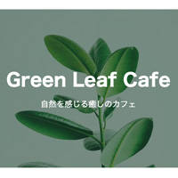
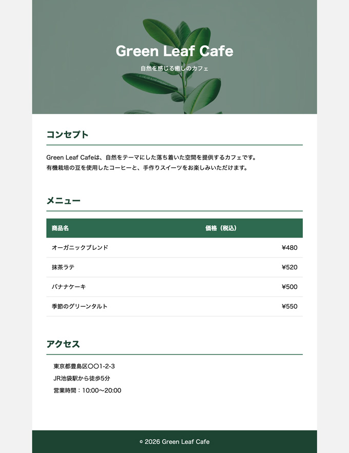

1カラム固定幅レイアウト

- プロンプト例
HTML＋CSS完成形を作成して
- 幅：800px
- 中央寄せ（margin: 0 auto;）
- 背景色：bodyは薄いグレー
- mainは白
- headerは濃い色＋白文字
- sectionごとに padding を設定
- h2 と p の間に margin
- footer は中央揃え
完成例

🎯 このコードで学べること
✔ 1カラム固定幅レイアウト
✔ 中央寄せ（margin: 0 auto;）
✔ header / main / footer の構造
✔ sectionごとの余白設計
✔ 補色アクセントの使い方
✔ ボタンデザイン
設計方針
- 1カラム（800px固定）
- ベース：ナチュラルグリーン
- ダークトーン：深緑（ヘッダー・フッター）
- アクセント：やや明るいリーフグリーン
- 背景：薄いグレー
- main：白
🎨 色の構成解説
| 役割 | 色 | 目的 |
|---|---|---|
| ヘッダー・フッター | #1b4332 | 安定感・高級感 |
| 見出しライン | #2d6a4f | 統一感 |
| ボタン | #40916c | アクセント |
| 外背景 | #f2f2f2 | コントラスト確保 |
背景画像を設定
- 画像の上に暗めのオーバーレイ（文字を読みやすくする）
- 高さを固定
- 背景は cover で全面表示
テキスト
Green Leaf Cafe 自然を感じる癒しのカフェ コンセプト Green Leaf Cafeは、自然をテーマにした落ち着いた空間を提供するカフェです。 有機栽培の豆を使用したコーヒーと、手作りスイーツをお楽しみいただけます。 メニュー 商品名 価格（税込） オーガニックブレンド ¥480 抹茶ラテ ¥520 バナナケーキ ¥500 季節のグリーンタルト ¥550 アクセス 東京都豊島区〇〇1-2-3 JR池袋駅から徒歩5分 営業時間：10:00〜20:00 © 2026 Green Leaf Cafe
記述例
【HTML】
<!DOCTYPE html> <html lang="ja"> <head> <meta charset="UTF-8"> <title>Green Leaf Cafe</title> <link rel="stylesheet" href="css/style.css"> </head> <body> <div class="container"> <!-- header --> <header> <h1>Green Leaf Cafe</h1> <p>自然を感じる癒しのカフェ</p> </header> <!-- /header --> <!-- main --> <main> <section> <h2>コンセプト</h2> <p> Green Leaf Cafeは、自然をテーマにした落ち着いた空間を提供するカフェです。<br> 有機栽培の豆を使用したコーヒーと、手作りスイーツをお楽しみいただけます。 </p> </section><!-- /section --> <section> <h2>メニュー</h2> <table> <thead> <tr> <th>商品名</th> <th>価格（税込）</th> </tr> </thead> <tbody> <tr> <td>オーガニックブレンド</td> <td>¥480</td> </tr> <tr> <td>抹茶ラテ</td> <td>¥520</td> </tr> <tr> <td>バナナケーキ</td> <td>¥500</td> </tr> <tr> <td>季節のグリーンタルト</td> <td>¥550</td> </tr> </tbody> </table> </section><!-- /section --> <section> <h2>アクセス</h2> <ul> <li>東京都豊島区〇〇1-2-3</li> <li>JR池袋駅から徒歩5分</li> <li>営業時間：10:00〜20:00</li> </ul> </section><!-- /section --> </main> <!-- main --> <!-- footer --> <footer> <p>© 2026 Green Leaf Cafe</p> </footer> <!-- /footer --> </div><!-- /.container --> </body> </html>
【CSS】
@charset "UTF-8"; /* ---------------------------------------- reset ---------------------------------------- */ * { margin: 0; padding: 0; box-sizing: border-box; } ul { list-style: none; } a { color: inherit; text-decoration: none; } img { max-width: 100%; vertical-align: bottom; } /* ---------------------------------------- body（全体設定） ---------------------------------------- */ body { margin: 0; background-color: #f2f2f2; font-family: sans-serif; } /* ---------------------------------------- layout ---------------------------------------- */ .container { width: 800px; margin: 0 auto; background-color: #ffffff; } /* ---------------------------------------- header（背景画像付き） ---------------------------------------- */ header { position: relative; height: 320px; background-image: url("https://images.unsplash.com/photo-1501004318641-b39e6451bec6?q=80&w=1600&auto=format&fit=crop"); background-size: cover; background-position: center; background-repeat: no-repeat; color: #ffffff; display: flex; flex-direction: column; justify-content: center; align-items: center; } /* オーバーレイ */ header::before { content: ""; position: absolute; inset: 0; background-color: rgba(27, 67, 50, 0.6); /* 深緑の半透明 */ } header h1, header p { position: relative; /* オーバーレイより前に出す */ } header h1 { font-size: 36px; margin-bottom: 10px; } /* ------------------------------ main ------------------------------ */ main { padding: 40px; } section { margin-bottom: 60px; } section h2 { margin-bottom: 20px; border-bottom: 2px solid #2d6a4f; padding-bottom: 10px; color: #1b4332; } section p { line-height: 1.8; margin-bottom: 15px; } ul { padding-left: 20px; } li { margin-bottom: 10px; } .button { display: inline-block; background-color: #40916c; color: #ffffff; padding: 10px 20px; text-decoration: none; border-radius: 5px; transition: 0.3s; } .button:hover { background-color: #2d6a4f; } /* ---------------------------------------- table（メニュー） ---------------------------------------- */ table { width: 100%; border-collapse: collapse; } thead { background-color: #2d6a4f; color: #ffffff; } th, td { padding: 15px; border-bottom: 1px solid #dddddd; } th { text-align: left; } td:last-child { text-align: right; /* 価格右寄せ */ } /* ホバー効果 */ tbody tr:hover { background-color: #f1f8f4; } /* ---------------------------------------- footer ---------------------------------------- */ footer { background-color: #1b4332; color: #ffffff; text-align: center; padding: 20px; }